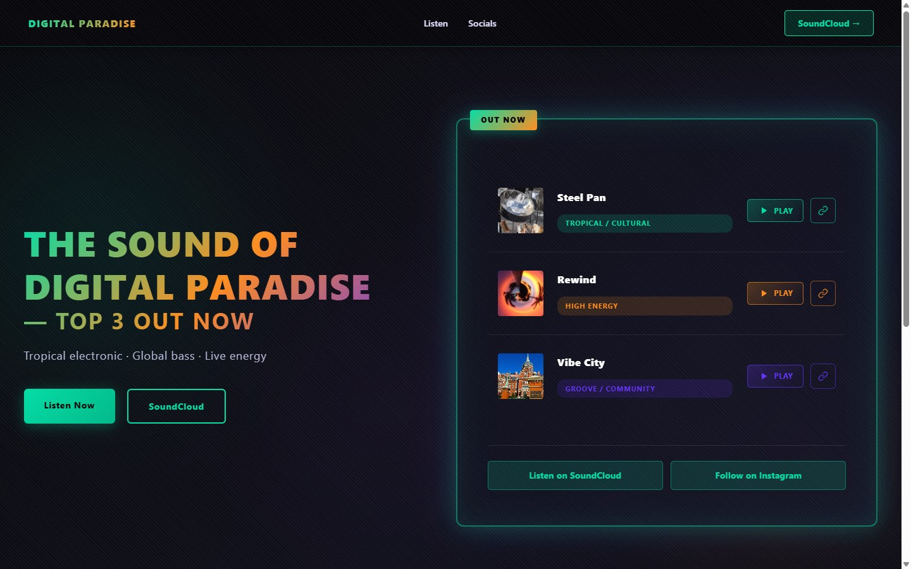
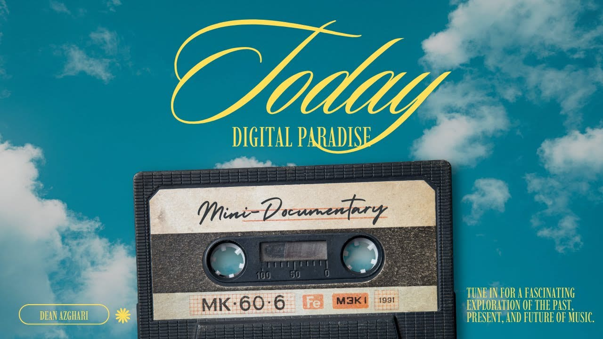
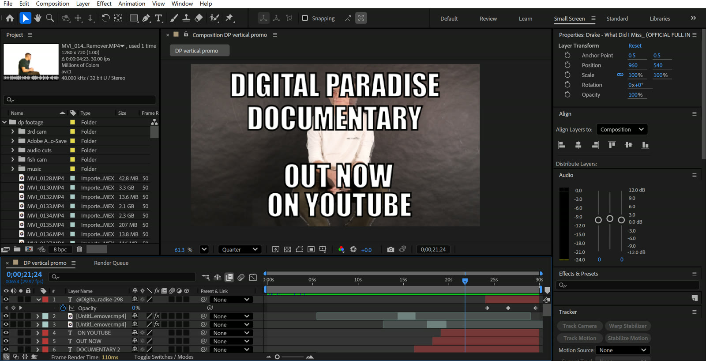
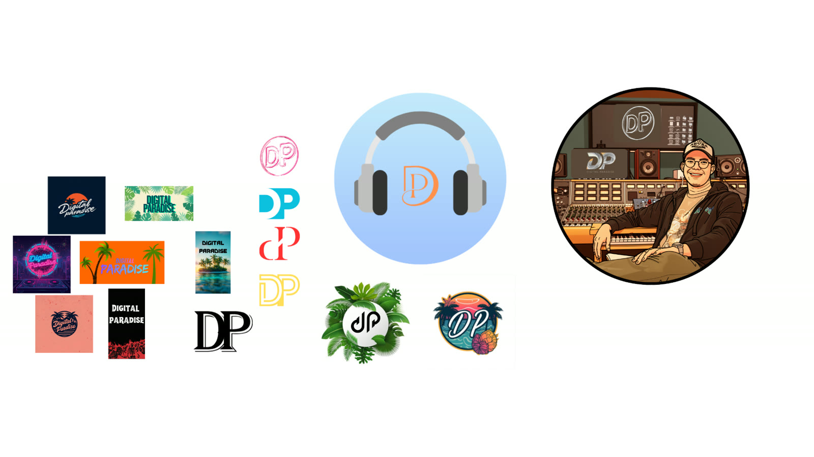

Live website
Designed and built by me with HTML, CSS and JavaScript.
Explore the websiteMedia Creation / Website & Motion
A collaborative artist-branding project with two finished outputs I produced: the live landing page and the client video.
Explore the work
Two finished outputs
Designed and built by me with HTML, CSS and JavaScript.
Explore the websiteFilmed and edited by me for Digital Paradise, with motion work in After Effects.
Explore the video01 / Frontend
I designed the landing-page interface and built it with HTML, CSS and vanilla JavaScript, then published it through GitHub Pages. The release section brings three tracks together with direct listening and sharing actions.
02 / Client media

Production process
I filmed most of the original footage across two Digital Paradise live events in Stratumseind and a studio session at Fontys Academy in Tilburg. I combined this material with additional footage, then selected, cut and assembled the clips into the final client video.
Post-production

I used After Effects for the editing and motion side of the Digital Paradise content, working with layered footage, promotional typography and keyframed animation. After filming, I shaped the material through selection, pacing, transitions, effects and motion.
Team visual exploration

The team explored multiple logo directions, color and type choices, photoshoot ideas, social concepts and a wider content strategy. These explorations provide context for the two finished outputs I produced; I do not claim sole authorship of the full brand identity.
The team planned audience research to reduce assumptions around music identity, branding and content direction. The available survey document records that intent, not results that validate a final design.
My contribution
Within the Digital Paradise team project, I was responsible for two major finished outputs: the website and the video. I designed and built the live landing page using HTML, CSS and JavaScript. For the video, I filmed most of the original footage across two live events and a studio session, then combined that material with additional footage and handled the edit, pacing, transitions, effects and motion work in After Effects.
Team context
I worked within a team with Dean Azghari, Risha Estachia and Oumaima Zakhini. The wider project included shared branding direction, research planning, logo exploration, social/content concepts and campaign thinking; my website and client-video responsibilities are presented separately.